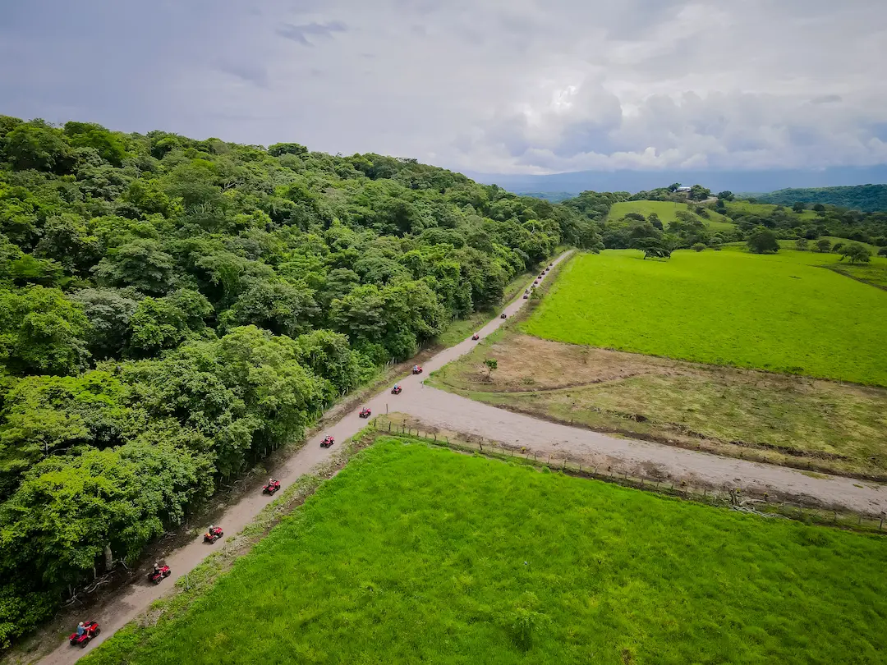
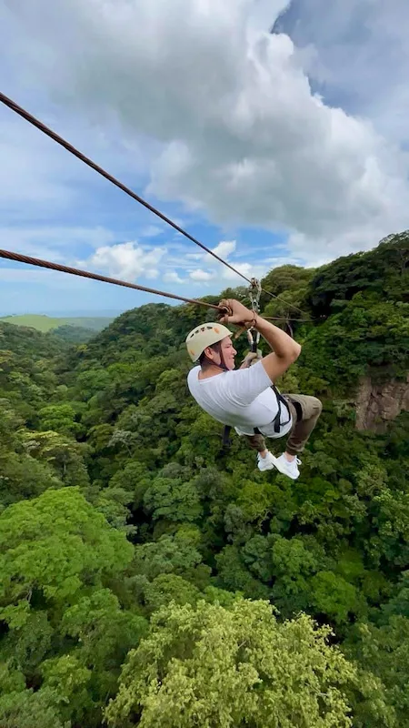
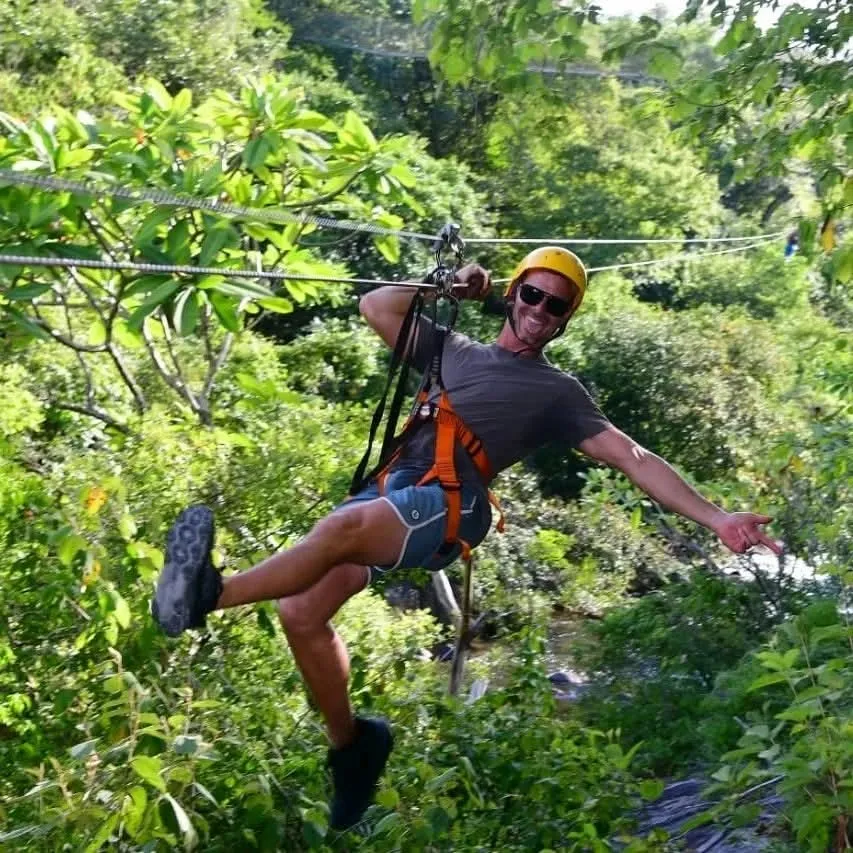

Updated September 2026
December through April is Guanacaste's dry season: generally drier, sunnier and busier for bookings, though rain and inland rainforest conditions still matter for planning.
- Dry season: December–April
- Peak booking pressure: December–March
- Papagayo planning lens: drier coastal conditions
- Rain can still happen at any time of year, especially inland
- Palo Verde specifically reports its best wildlife visibility in dry season
- Advance planning is recommended during peak travel periods
Recommended For Your Trip

2-Hour ATV Mountain Ride
Two hours of private ATV adventure through unpaved mountain roads and dry forest terrain in Guanacaste. Off-the-beaten-track riding with a certified bilingual guide, exclusively for your group.

Borinque 4 Senses Tour — Horseback, Zip Line, Waterfall & Hot Springs
Private Borinque 4 Senses Tour, horseback riding with Pacific coast panoramas, forest hike to Misterio Waterfall, adrenaline zip line and volcanic hot springs with mud and sauna. Lunch included.

Canyon Adventure Park — Zip, Rappel, Climb & Raft
Private half-day at Canyon Adventure Park, zip line 7 cables with bird's-eye canopy views, rappel, rock climbing and 2-mile Class II-III rafting. Lunch included. Minimum age 6.
The Short Answer
December through April is Guanacaste's dry season, and for travelers based in Papagayo, it generally means drier conditions and more consistent sunshine than the rest of the year. That does not mean guaranteed blue skies every day: rain is still possible, and inland rainforest destinations like Tenorio National Park can behave differently than the coast. December through March tends to be the busiest booking stretch of the year, while April stays within the dry-season window without carrying quite the same peak-booking pressure. The dry season also changes the landscape, replacing deep green with drier, golden tones. This guide covers what that means for planning, not a weather promise.
Guanacaste is a large province, and dry-season conditions are not identical everywhere in it. This guide uses Papagayo, on the coast, as the practical planning lens, since that's where most Wild Papagayo travelers are based. Inland and rainforest areas, especially around Tenorio Volcano National Park near Río Celeste, can see meaningfully different conditions than the coast, even during the dry season.
Dry season makes planning easier, not weather-guaranteed. Pack for sun, but keep a light rain layer for inland and rainforest days.
What to Expect at a Glance
| Topic | What to expect | Planning note |
|---|---|---|
| Rain | Generally drier, more consistent sunshine | Rain is still possible, especially inland |
| Landscape | Drier, browner / golden dry-forest look | A normal seasonal appearance, not damage |
| Wildlife | Palo Verde specifically reports better visibility in dry season | Don't generalize this to all Guanacaste wildlife |
| Roads | Generally fewer rain-related delays in some areas | Not a guarantee of easy roads everywhere |
| Crowds | December–March tends to be the busiest stretch | Plan accommodations and transport in advance |
| Tours | Some waterfalls and rivers may look different than in green season | Tours still operate; seasonal appearance changes |
Rain and Sunshine
Dry season generally means longer stretches of clear or mostly clear days and more consistent sunshine than the rest of the year. Prolonged dry periods are normal for this time of year in Guanacaste, and many travelers plan outdoor days, beach time and tours around that general reliability. That said, no one can promise a rain-free trip: rain is still possible at any point in the year, and a passing shower during the dry season isn't unusual, particularly as the season transitions in either direction. Think of it as a shift in the odds in your favor, not a guarantee written into the calendar.
Heat and Sun Exposure
Days during dry season can feel warm and sun-exposed, especially with fewer clouds to break up direct sunlight through the middle of the day. Hydration and shade matter more on these days than they might during a cloudier, greener month, and light, breathable clothing is a practical choice for most outdoor plans, from beach mornings to hiking-based tours. None of this requires exact temperature figures to plan around; dressing and pacing your day for sun exposure is the practical takeaway.
The Landscape
One of the more noticeable dry-season changes is how the countryside looks. Guanacaste's dry forest sheds much of its green and takes on drier, more golden and brown tones by comparison to the lush green of the rest of the year, especially along roadsides and open hillsides away from the coast. This is a normal seasonal cycle for a tropical dry forest, not a sign of drought stress or damage, and the landscape returns to green again once the rains resume in May. Photographers and first-time visitors sometimes expect the postcard-green look they've seen in photos taken during a different month, so it's worth knowing in advance that the scenery genuinely looks different depending on when you visit.
Palo Verde and Wildlife Visibility
Not every wildlife claim in Guanacaste holds up the same way, but one destination has a specific, sourced note worth passing along: the Palo Verde River Boat tour reports that river conditions and wildlife visibility are best during the dry season, December through April, as water sources concentrate and animals gather closer to the riverbanks. That's a Palo Verde-specific pattern, not a blanket rule for every park or reserve in the region, and even there, sightings are frequent rather than guaranteed.
Inland Rainforest: The Río Celeste Nuance
Coastal dry season in Papagayo does not automatically mean dry conditions inland. Río Celeste's striking blue color tends to be more reliable during drier stretches of weather, but heavy rain can still temporarily change the color, and that can happen at any time of year, dry season included. Tenorio Volcano National Park sits in a rainforest zone with its own microclimate, so it's worth planning a Río Celeste day with that in mind rather than assuming coastal conditions apply.
Roads Near Rincón de la Vieja
Some roads in the Rincón de la Vieja area can be rough, and that's especially true during the rainy season. Dry season likely means fewer rain-related road issues in some of these areas, but that's not a guarantee of easy driving everywhere, and unpaved sections can still be slow going regardless of season.
Crowds and Booking Ahead
December through March tends to be the busiest booking stretch of the year in Guanacaste, and accommodations, private transportation and some tours are worth planning ahead of time during this window. Several Wild Papagayo tours also note that private availability is more limited during peak travel periods, which is exactly this stretch of the calendar. April remains within the dry-season definition without necessarily carrying the same peak-booking pressure as the December–March core, since the busiest holiday and school-break travel tends to cluster earlier in the season. None of this means everything sells out, but a little advance planning goes further during the busier months than it would during a quieter stretch of the year.
Early vs. Late Dry Season
Rather than break the dry season into five separate months, it's more useful to think of it in two parts. December through March is the busiest part of the travel season within the dry-season window. April is still dry season by definition, generally continuing the same drier, sunnier pattern, but without automatically carrying the same booking pressure as the months before it.
What to Pack
Dry-season packing can stay simple: sun protection, plenty of water, light breathable clothing, and closed-toe shoes for any hiking. It's still worth packing one light layer for cooler evenings and a compact rain shell, since rain remains possible, especially inland. For a fuller, season-specific packing breakdown, see our green season packing list, which covers the wetter half of the year in more depth.
Dry Season vs. Green Season
Dry season may suit travelers who prioritize more predictable outdoor planning, beach time and easier scheduling around the weather. Green season offers a different experience, with greener landscapes, fewer crowds and its own kind of atmosphere, as covered in our guide to visiting during green season. Neither is a universally better choice; it depends on what you're planning around.
Frequently Asked Questions
When is dry season in Guanacaste?
Guanacaste's dry season runs from December through April. December through March is generally the busiest booking period within that window.
Does it still rain in Guanacaste during dry season?
Yes, rain is still possible during dry season. Conditions are generally drier and sunnier than the rest of the year, but no period is entirely rain-free, and inland rainforest areas can see rain even when the coast is dry.
Is December to April a good time to stay in Papagayo?
Dry season may suit travelers who prioritize more predictable outdoor planning, beach time and easier scheduling. It's also the busiest booking period of the year, so it's worth planning accommodations and transportation ahead of time.
Is Guanacaste hotter during dry season?
Days can feel warm and sun-exposed during dry season, especially with fewer clouds breaking up direct sunlight. Hydration, shade and light clothing are worth planning for.
Is wildlife easier to see during dry season?
At Palo Verde specifically, river conditions and wildlife visibility are reported as best during the dry season, December through April, since water sources concentrate and draw animals closer to the riverbanks. This is a Palo Verde-specific pattern rather than a rule for wildlife viewing across all of Guanacaste.
Do I still need rain gear in dry season?
A compact rain shell is still worth packing. Rain remains possible at any time of year, and inland rainforest destinations like Río Celeste can see rain even during the coastal dry season.
Should I book tours earlier during dry season?
Booking ahead is a reasonable idea during the busier December–March stretch, since private transportation and some tours have limited availability during peak travel periods. There's no fixed number of days or weeks required; earlier is simply safer during the busiest months.
Keep Reading


We respond on WhatsApp in under 2 hours.
Private tours, airport transfers, expert guides — all in one message.
No WhatsApp? Email us at info@wildpapagayo.com